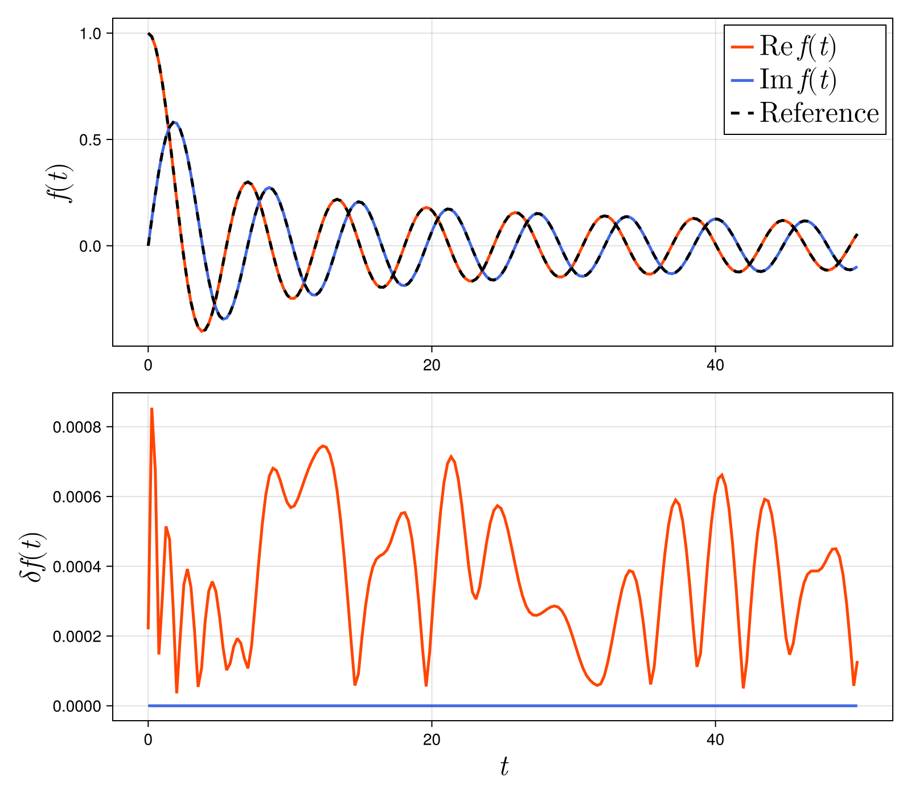

Exponential Fitting
Exponentials
First, we introduce ExpFit.Exponentials type. This type contains two fields: Exponents and coefficients of a sum of exponentials. Let us show you how to use it.
We define an instance using exponent and coefficient.
exponent = [1.0 + 2.0im, 3.0 + 4.0im]
coefficient = [5.0 + 6.0im, 7.0 + 8.0im]
ef = Exponentials(exponent, coefficient)The instance ef contains the exponents and coefficients.
julia> ef.expon
2-element Vector{ComplexF64}:
1.0 + 2.0im
3.0 + 4.0im
julia> ef.coeff
2-element Vector{ComplexF64}:
5.0 + 6.0im
7.0 + 8.0imef also has a method and can be used as a function that returns sum(ef.coeff .* exp.(-ef.expon .* (t-t0)))
julia> f = t -> ef(t)
#1 (generic function with 1 method)
julia> g = t -> ef(t, 1.0)
#3 (generic function with 1 method)expfit
As an example to demonstrate how to use the expfit function, consider approximating a Bessel function with a sum of exponentials. The following is the code.
sing LinearAlgebra
using ExpFit
using SpecialFunctions
tmin = 0.0
tmax = 50.0
tol = 1e-3
N = 100
f = t -> besselj(0,t) + 1.0im*besselj(1,t)
ef = expfit(f, tmin, tmax, N, tol)
print("Approximation order = ", length(ef.coeff), "\n")
t = range(tmin, tmax, length=N*2)
fv = f.(t)
efv = ef.(t)
err = abs.(efv .- fv)
println("Root mean square = ", norm(err)/sqrt(N))Here, tmin and tmax specify the range used for the approximation, N is the number of sample points, and tol is the tolerance. ef is the instance of ExpFit.Exponentials.
When executed, the terminal will display the following.
Approximation order = 6
Root mean square = 0.0005937677782521255The Bessel function was approximated with six terms.
The results are also illustrated below. 
We observe that the absolute error $\delta f(t)$ is within the tolerance.
As an alternative use case, equally spaced discrete data can be input into the expfit function. Here, dt represents the time interval.
dt = (tmax-tmin) / (N-1)
fv = f.(t)
ef = expfit(fv, dt, tol)Additionally, the approximation order can be set instead of the tolerance.
order = 10
ef = expfit(f, tmin, tmax, N, order)
ef = expfit(fv, dt, order)Algorithms
The default algorithm used in expfit is ESPRIT algorithm. If you want use a different algorithm, you can set the alg option as
ef = expfit(fv, dt, tol; alg=ESPIRA1())Available algorithms and corresponding options are shown below.
- alg=ESPRIT()
- alg=Pencil()
- alg=Prony()
- alg=ESPIRA1()
- alg=ESPIRA2()
- alg=FastESPRIT()
Please see Reference for all the available methods.